《2018中国大陆地区雅思考生学术表现白皮书》发布啦！
官宣
去年全年中国考生的分数分析，都在这里了
不过在看之前，先让我们看看新航道和雅思官方官宣了什么？
新航道集团获雅思官方“集团贡献奖”
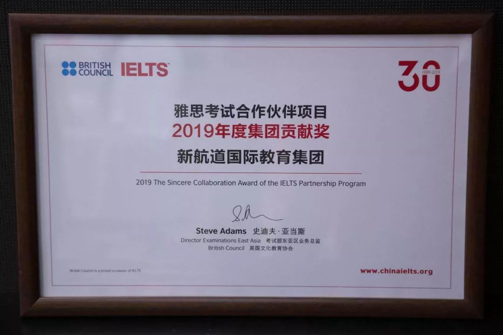
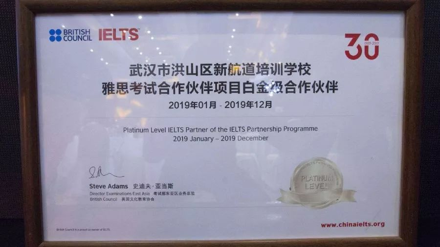
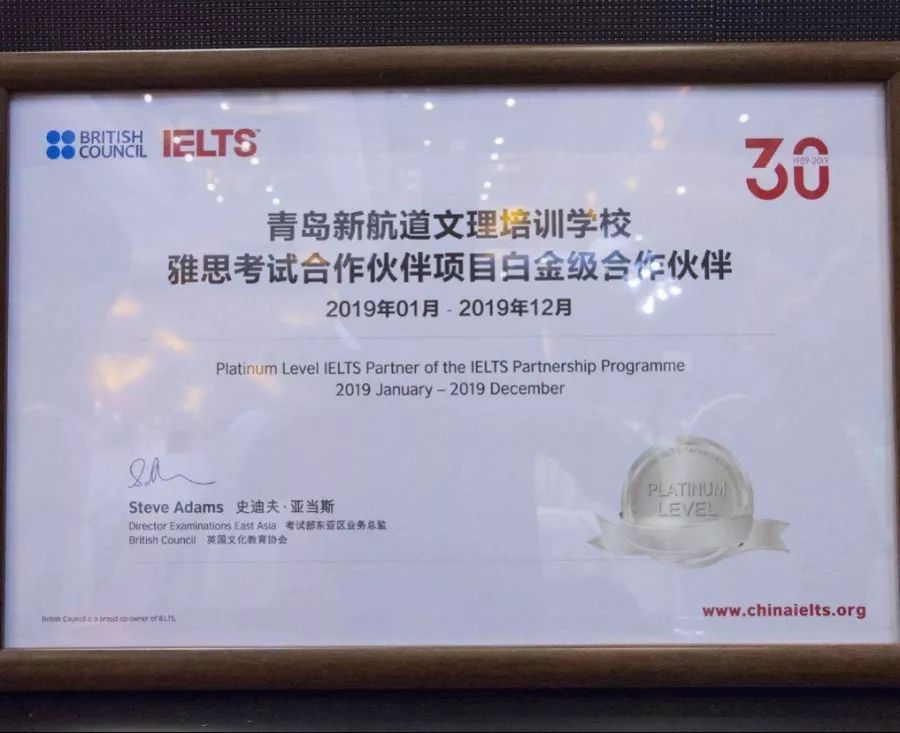
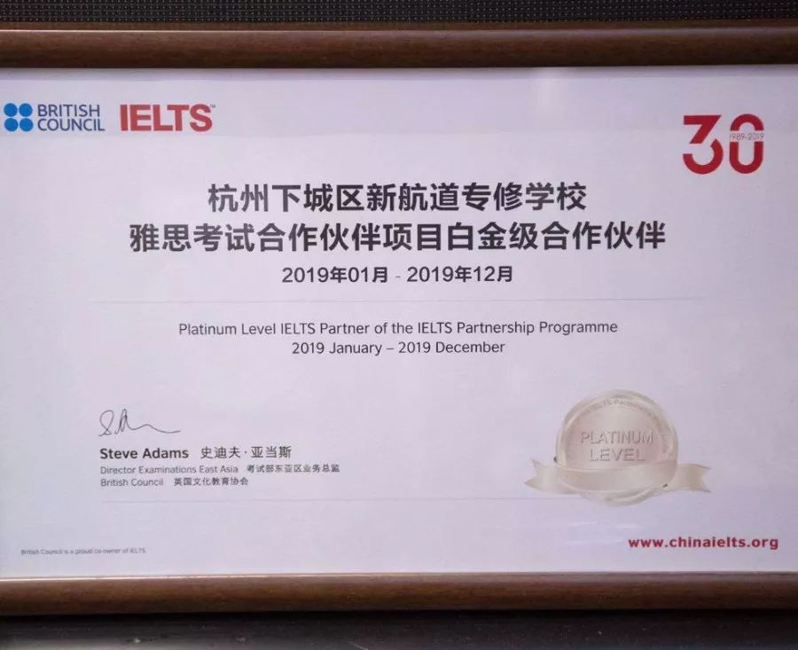
1月22日，雅思考试官方合作伙伴年会暨雅思30周年启动庆典在北京隆重举行！新航道国际教育集团董事长兼CEO胡敏教授作为特邀嘉宾出席发表主题致辞并作为国内唯一行业代表与雅思官方共同开启点灯仪式！新航道凭借超强实力及对雅思的突出贡献蝉联雅思考试官方“集团贡献奖”，新航道下属8所分校分别荣获“白金级合作伙伴（6所获奖白金级机构中，新航道独揽3个）、金级合作伙伴“奖项！新航道雅思——中国雅思培训标准缔造者！
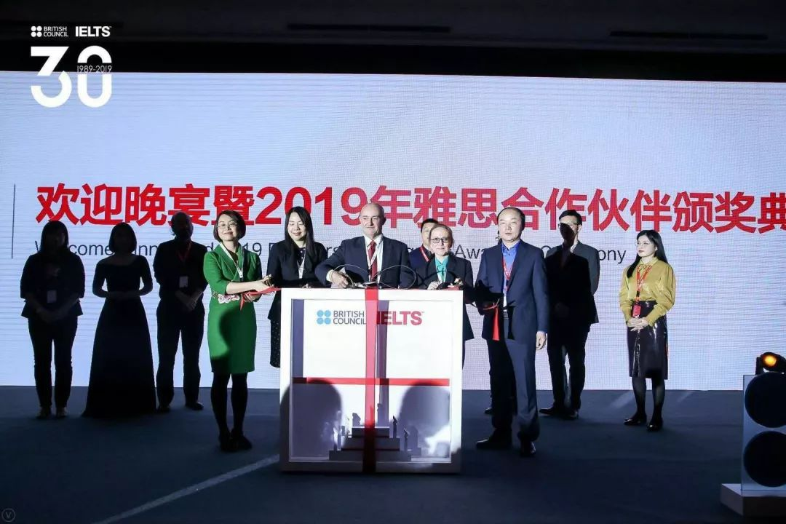
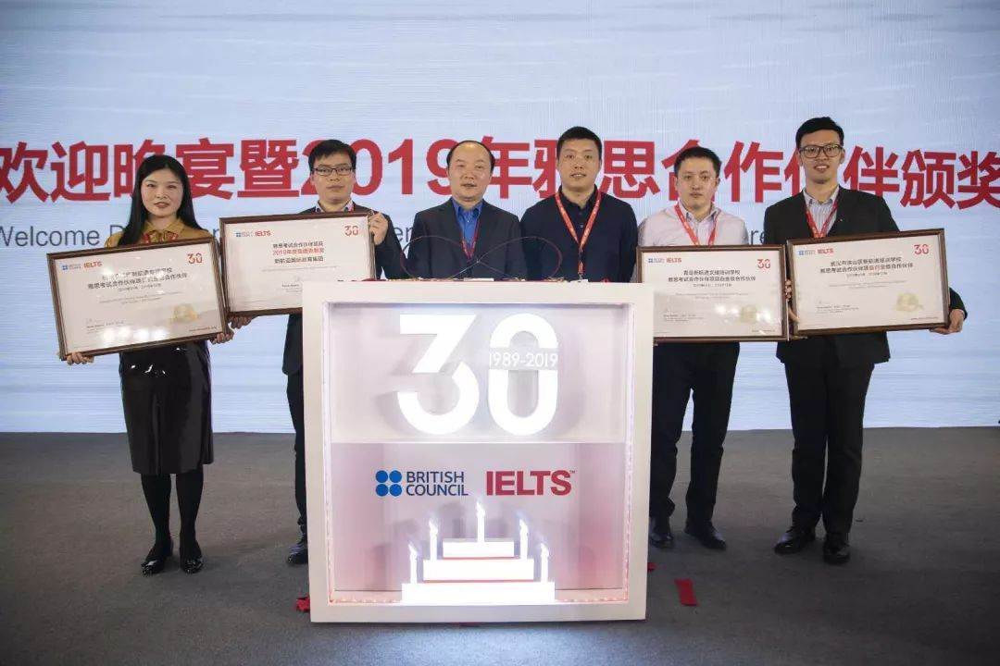
下面跟新航道小编一起看下
白皮书都说了什么？
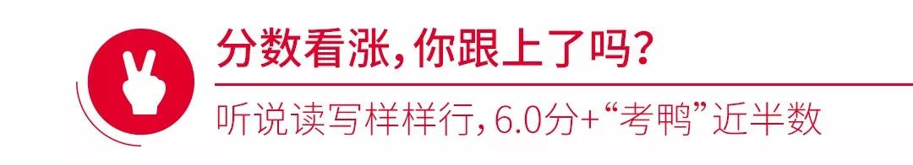
中国考生的英语各项能力，在过去5年间均有小幅提升
总分平均分由5.56分增至5.72分
听力和写作两项，更是跨梯队提升
听力由5.5分梯队杀入6.0分梯队
写作从5.0分梯队蹦哒到5.5分梯队
中国考生强项——阅读，则增至6.15分
比比看，各项得分上涨，有没有你的功劳呢？
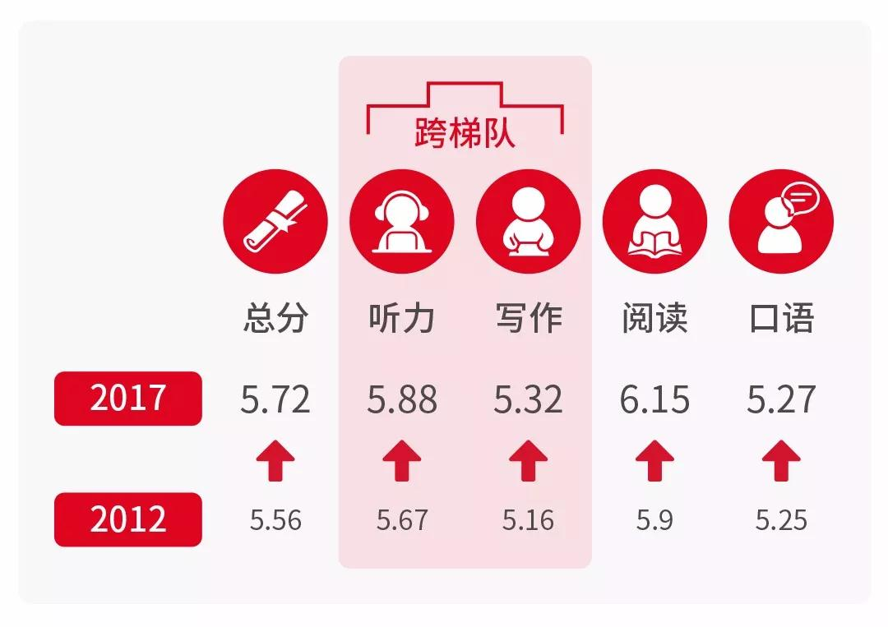
“考鸭”大部队集中在5.5分和6.0分梯队
其中，总分在6.0 分及以上的考生接近半数
也就是说——
你身边的“屠鸭”党
几乎每两人中就有一个至少是competent user哦
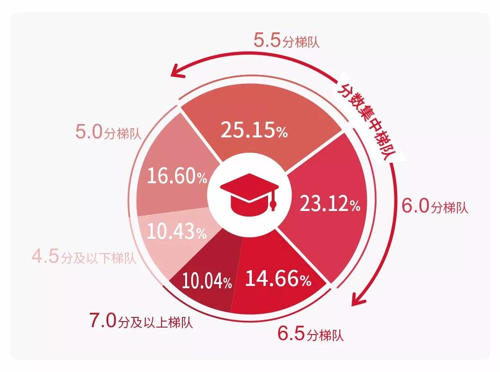
再来看看，和全球考雅思的小伙伴相比
咱们中国考生的平均分达到了什么水平——
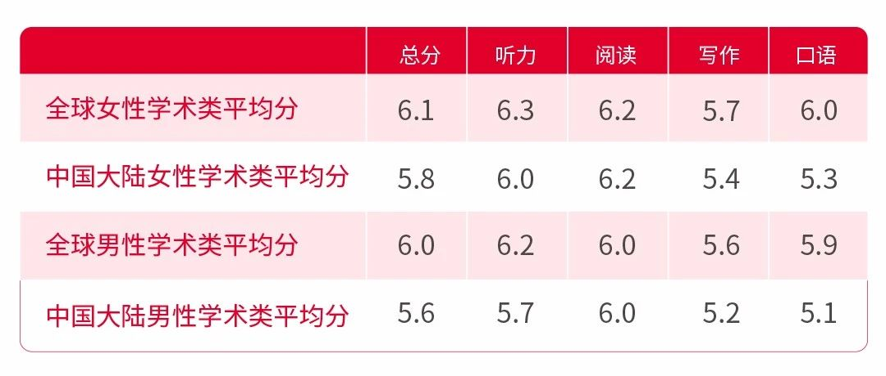
大数据告诉你：咱们擅长阅读，而口语嘛……
大家都要加油努力鸭！
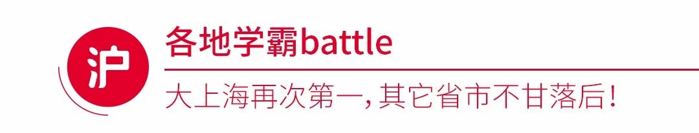
要说，表现最为突出的
还得是咱们大大大上海的考生了
恭喜，阿拉上海再次蝉联全国首位
而江苏的学霸们
再次牢牢霸住第二名
当然，湖北、浙江、四川、北京和重庆也不甘落后
学术类雅思总分平均分今年首次进入第一梯队——
6.0小分队
加入上海和江苏，与全球平均水平持平！
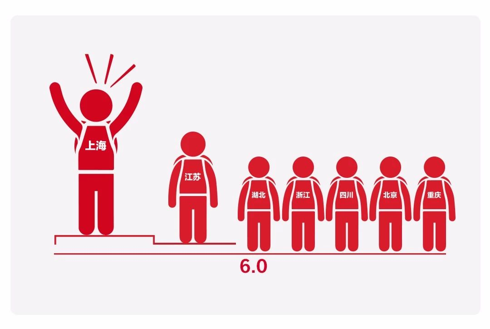
6.0小分队和5.5小分队集合！
快来找找，有没有你的家乡？
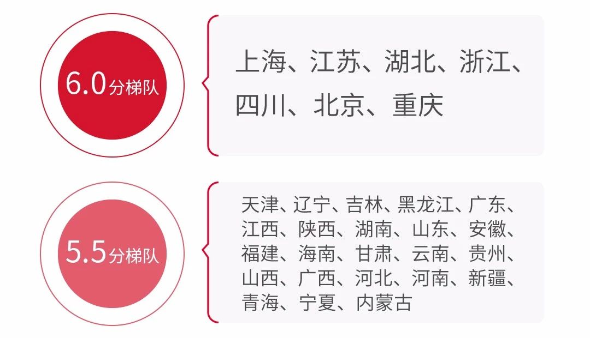
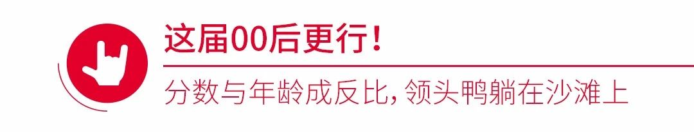
再来看看咱们祖国的花朵 ——
这一届中学生怎么样？
答：00后们很争气！
不仅总分平均分达到了5.5分
其中，还有一些优秀的选手——
深圳国际交流学院
杭州外国语学校
南京外国语学校
十一学校
甚至超过了复旦大学
少年强，则中国强呀！
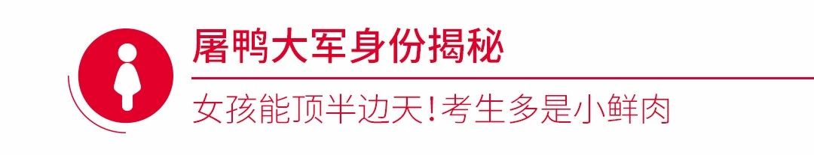
各位小哥哥们，2019要加油鸭！
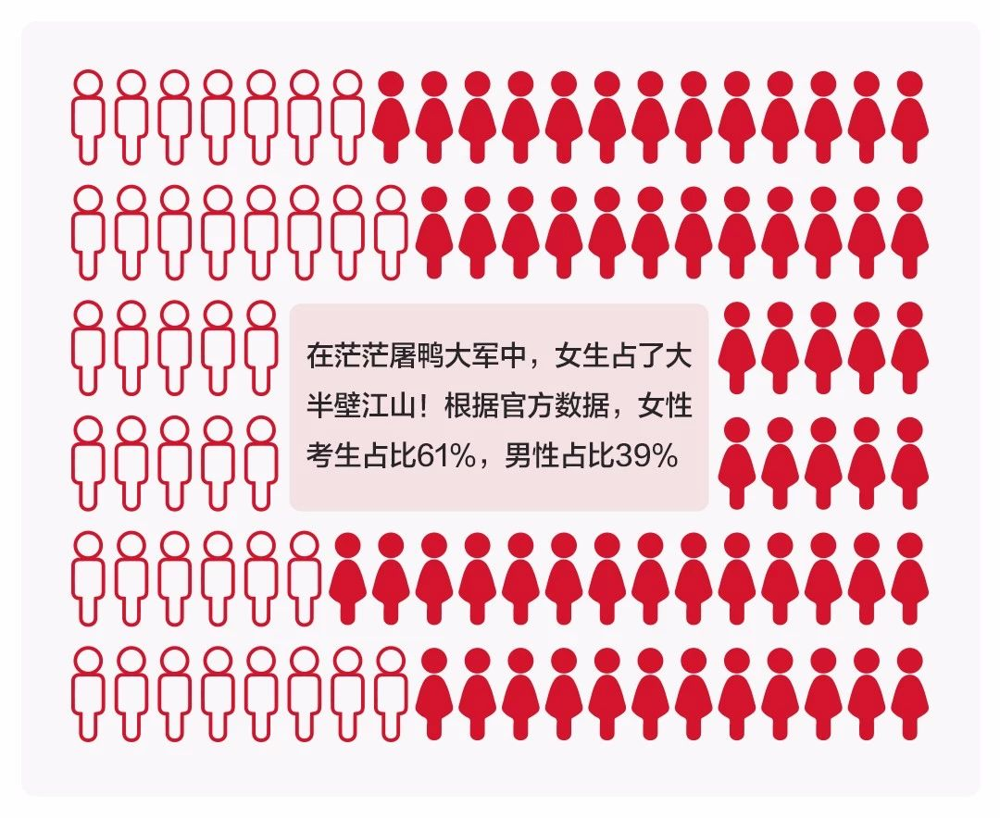
说到考生的年龄
今年中国大陆地区雅思考生依旧以19-22岁的占主流
18岁以下的雅思考生已成为第二大年龄群体
就问90后们怕不怕，00后已经赶上啦！
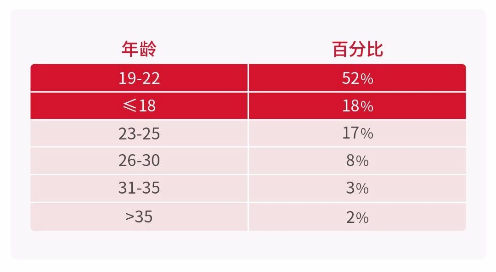
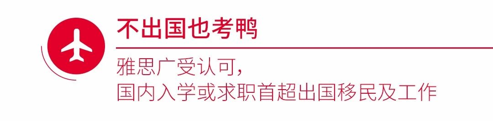
最后，值得关注的是
随着雅思考试越来越受到国内院校和雇主的认可
以检测英文水平、国内入学、求职等国内用途为考试目的考生人数逐渐增加
比例达到5.3%，名列第二
首次超越出国移民及工作的群体占比
一句话：有雅思成绩傍身，真的好处多多！
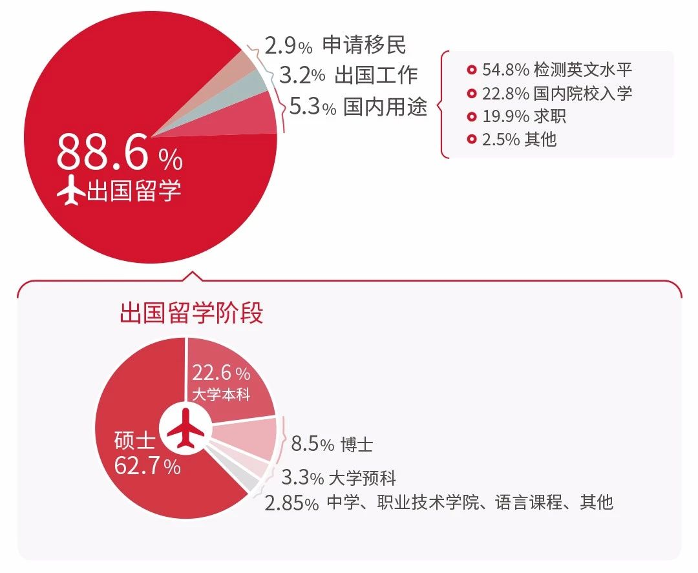
以上！
就是2018中国考生雅思成绩的数据报告
总的来说，中国考生雅思的平均分稳步上升
屠鸭党们这一年辛苦啦
好成绩离不开每一个认真备考的考生
2019，请各位“考鸭”们继续加油鸭！